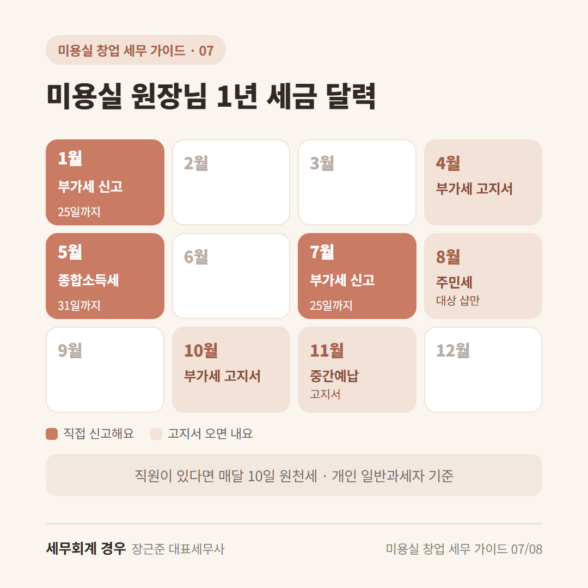
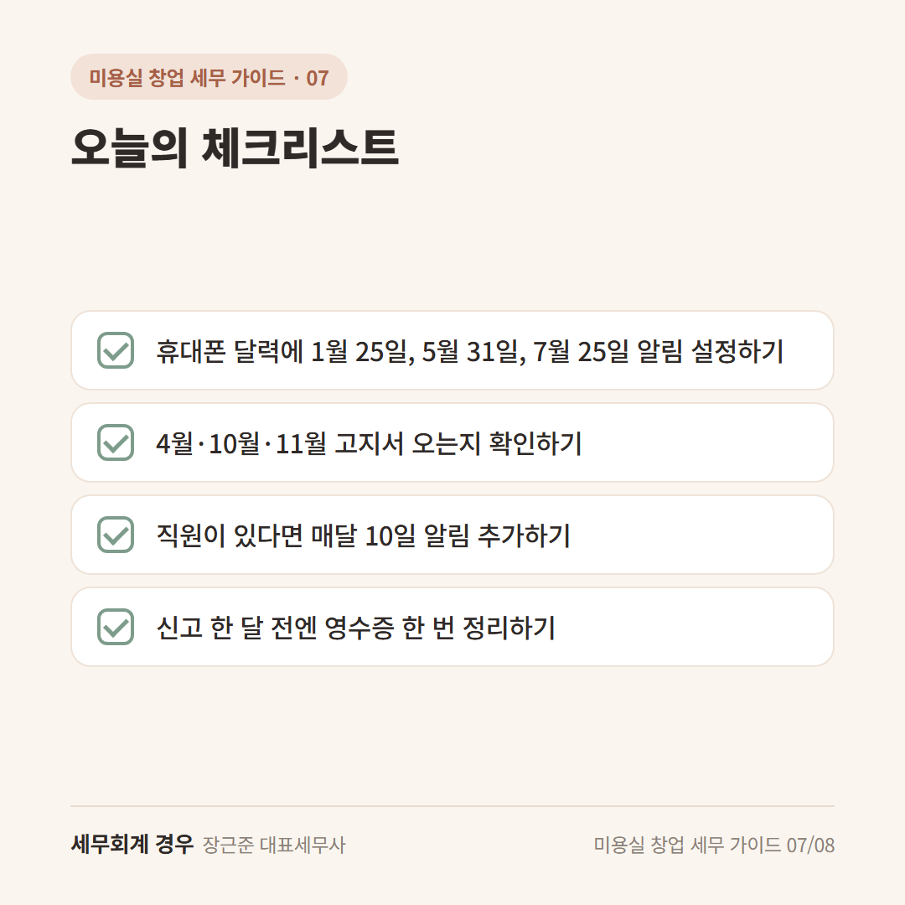

미용실 창업 세무 가이드 · 7번째 글
미용실 원장님 1년 세금 달력, 이 날짜만 기억하세요
예약 달력은 한 칸도 안 놓치는데, 세금 날짜는 자꾸 까먹게 되죠.
"신고가 1월이었나, 5월이었나?"
미용실 세금 신고 기간은 1년에 몇 번 정해져 있어요.
오늘 달력에 한 번만 적어두시면 돼요.
(개인 일반과세자 기준이에요. 간이과세자는 아래에 따로 적었어요.)

꼭 기억할 달: 1월, 5월, 7월
1월 (25일까지): 부가세 신고
작년 7월~12월 매출에 대한 부가세를 신고하고 내요.
5월 (31일까지): 종합소득세 신고
작년 1년 동안 번 돈에 대한 세금을 신고해요.
지방소득세도 이때 함께 챙겨요.
매출이 많은 샵은 6월 말까지 신고하는 경우도 있어요.
7월 (25일까지): 부가세 신고
올해 1월~6월 매출에 대한 부가세를 신고하고 내요.
신고 마감일이 주말이나 공휴일이면 그다음 날까지예요.
고지서가 오는 달: 4월, 10월, 11월
4월·10월: 부가세 고지서
국세청에서 부가세 일부를 미리 내라고 고지서를 보내줄 수 있어요.
따로 신고할 필요 없이, 고지서 금액대로 내시면 돼요.
11월: 종합소득세 중간예납
작년 세금을 기준으로 올해 세금 일부를 미리 내는 거예요.
이것도 고지서가 오면 그대로 내시면 돼요.
8월: 주민세(사업소분)
샵 규모에 따라 대상이 될 수 있어요.
직원이 있다면: 매달 10일
직원이나 3.3% 디자이너에게 돈을 줬다면
다음 달 10일까지 떼어둔 세금을 신고하고 내요.
직원이 적은 샵은 6개월에 한 번으로 바꿀 수 있는 경우도 있어요.
간이과세자라면
부가세 신고는 1년에 한 번, 1월에 해요.
종합소득세는 똑같이 5월이에요.
오늘의 체크리스트

- 휴대폰 달력에 1월 25일, 5월 31일, 7월 25일 알림 설정하기
- 4월·10월·11월 고지서 오는지 확인하기
- 직원이 있다면 매달 10일 알림 추가하기
- 신고 한 달 전엔 영수증 한 번 정리하기
자주 묻는 질문
오픈 첫해엔 언제 처음 신고해요?
오픈한 달에 따라 첫 부가세 신고 달이 달라요. 사업자등록증 받으시면 한 번 확인해보세요.
고지서 금액이 너무 크게 느껴지면요?
올해 매출이 많이 줄었다면 직접 계산해서 신고하는 방법도 있어요. 상황마다 달라서 상담으로 확인해보세요.
마무리
미용실 세금 신고 기간은 "1월·5월·7월"만 먼저 기억하셔도 충분해요.
내 샵은 어떤 날짜가 해당되는지 헷갈리면 한 번 편하게 물어보세요.
개인 상황에 따라 달라질 수 있으니 자세한 내용은 상담으로 확인하세요.